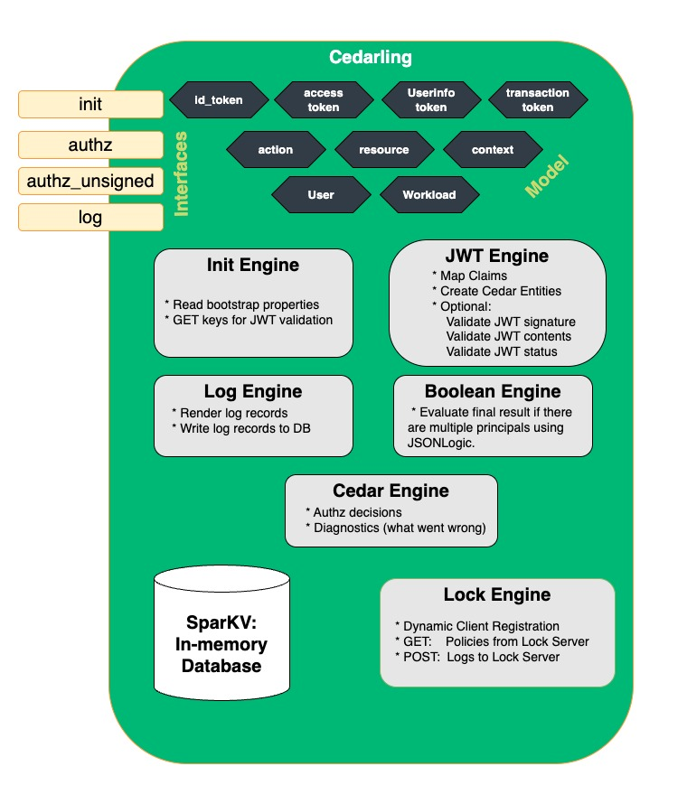

An Overview of The Cedarling#
The Cedarling, powered by the Rust Cedar engine, provides a fast, embeddable, and self-contained solution for policy-based authorization, designed for both client-side and server-side enforcement. This makes it particularly well-suited for latency-sensitive environments like databases, browser-based applications, mobile apps, API gateways, and embedded devices. At less than 2M in size, it's small enough to load into your browser or mobile application. When embedded, the Cedarling avoids slow cloud policy decisions, enabling sub-millisecond performance. The Cedarling never fetches data to make a decision--this is a performance killer and would make the PDP unreliable. The application must fetch all data and tokens before it makes an authorization request.
The Cedarling can be:
- Embedded in browsers using the WASM npm package
- Embedded in mobile apps using the iOS or Android SDKs
- Integrated into backend services using the Java, Go, Rust, Python, or C SDKs
- Deployed as a sidecar
- Deployed as a centralized cloud PDP service
The Cedarling is not merely a library--it is an embeddable Policy Decision Point (PDP), which includes an in-memory cache to enable efficient logging. It connects to a Policy Repository to obtain its policies. Enterprises may also want to connect the Cedarling to a hub system to send its audit logs--a record of every decision to allow or deny access to a capability. From the hub system, enterprises can perform threat detection and stream the logs to a SIEM or ITDR.
The supports JWT validation and claims mapping through some of its authorization interfaces. We call this Token Based Access Control--where developers present a collection of tokens to obtain authorization to a capability. JWTs provide trusted contextual information to the Cedarling. The payload of a JWT token is a JSON document, and frequently a complex string, like a URI. Through the use of regular expressions, developers can parse strings and map them to Cedar entities. This provides a mechanism to map data from trusted issuers to Cedar policies.
About Cedar
Cedar is a policy syntax invented by Amazon and used by its Verified Permission service. Cedar policies enable developers to implement fine-grain access control and externalize policies. Cedar is a CNCF candidate project. To learn more about why the design of Cedar is intuitive, fast and safe, check out this article or watch this video
If you're wondering how Cedar compares to Rego or OpenFGA, read this white paper.
These Cedarling docs assume you have a basic understanding of Cedar policy syntax and language features.
On initialization, the Cedarling loads a "policy store" -- a set of policies, a schema, and a list of trusted token issuers. Policy stores are application-specific, meaning each store does not contain all policies and schema for all applications in your domain. Each policy store has unique policies and a schema needed only for one specific application.
Cedarling Interfaces#
At a high level, developers interact with the Cedarling using five core interfaces:
- Initialization (
init) – Loads the policy store and retrieves configuration settings. - Authorization (
authorize) – Evaluates policies by sending a bundle of JWTs to specify the principal. - Authorization (
authorize_unsigned) – Evaluates policies with an application asserted principal. - Multi-Issuer Authorization (
authorize_multi_issuer) – Evaluates policies based on multiple JWT tokens from different issuers without requiring traditional user/workload principals. - Logging (
log) – Retrieves decision and system logs for auditing.
Developers call the init interface on startup of their application, causing the
Cedarling to read its bootstrap properties and load its
policy store. If configured for JWT validation, the Cedarling
will fetch the most recent issuer public keys and metadata.
The standard authorize method answers the question: "Is this action, on this resource,
given this context, allowed with these JWTs?". The Cedarling returns the
decision--allow or deny. If denied, the Cedarling returns "diagnostics"--additional
context to clarify why the decision was not allowed. During authz, the Cedarling can
perform two more important jobs: (1) validate JWT tokens; (2) log the resulting decision.
The authorize_unsigned variant is used when JWTs have already been validated by the
application, or when working with non-token based principals. It follows the same
evaluation logic but skips JWT validation steps.
The authorize_multi_issuer method is designed for scenarios where applications need to evaluate authorization based on multiple JWT tokens from different issuers in a single request. Unlike the standard authorize method which creates traditional User and Workload principals, this method evaluates policies based purely on the token entities themselves. Each token is validated, converted to a Cedar entity, and made available in the policy evaluation context. This approach is particularly useful for federation scenarios, API gateways handling tokens from multiple identity providers, or applications where authorization depends on capabilities asserted by different issuers rather than a single user identity. Policies can reference individual tokens using predictable naming conventions like context.tokens.acme_access_token or context.tokens.google_id_token.
The log interface enables developers to retrieve decision and system logs from the Cedarling's
in-memory cache. See the Cedarling log documentation for more information.
Cedarling Components#
The following diagram is a high-level picture of the Cedarling components:

- Cedar Engine a recent release of the Rust Cedar Engine, thanks to Amazon.
- SparKV is an in-memory key-value store that supports automatic expiration of data.
- Interfaces perform actions described above
- JWT Engine is used to validate JWT signatures, JWT content (e.g.,
exp), and to check if the JWT token is revoked (using the Status List JWT) - Lock Engine is used for enterprise deployments to load the Policy Store from a trusted source and send logs for central storage.
Token Based Access Control (TBAC) v. Application Asserted Identity#
The Cedarling has two different authorization interfaces. One requires the developer to provide JWTs to prove the identity of the principal: "It's Bob, and here's the token to prove it!" The other allows the application to assert the identity of the principal: "It's Bob, trust me, I authenticated him."
It's actually more powerful than that. The Cedarling allows the developer to pass not one token, but several tokens. This enables the developer to assert not only the human identity, but the software identities (or "Workload") that were involved in the issuance of the token. Token Based Access Control (TBAC) answers the question: "Given this bundle of tokens, is this action on this resource allowed in this context?" Or you could say more simply, "Does this bundle of tokens authorize this capability?" While RBAC policies are about roles, ABAC policies are about attributes, TBAC policies are about tokens.
TBAC helps developers implement security based on JWTs from trusted issuers like identity providers, hardware platforms, and federations. One of the Cedarling authorization interfaces automatically creates a User and Workload entity based on the most common OAuth and OpenID tokens. A new Cedarling authorization interface will enable reasoning on a collection of tokens from different issuers(watch the issue Jans-11834).
Cedarling and Zero Trust#
Zero Trust is a modern security model that assumes no implicit trust—every request must be explicitly authorized based on policies, identity, and context. The Cedarling enables end-to-end Zero Trust enforcement by embedding fine-grained authorization across the entire security stack, from client devices to backend services and databases.
End-to-End Authorization Enforcement#
The Cedarling can be deployed at every layer to ensure that access decisions are consistently enforced. The diagram below illustrates how the Cedarling operates in a hypothetical mobile application architecture:

- Identity Provider (IDP) Enforcement
- The IDP can use the Cedarling to determine if a mobile application should be allowed to register.
-
Example: An IDP policy might restrict registration to applications that present a valid Software Statement Assertion (SSA) or Google Play Integrity Attestation.
-
Client-Side Authorization in Mobile and Web Apps
- A mobile application can embed the Cedarling to enforce real-time access control before exposing UI components or calling APIs.
-
Example: A finance app may check if a user's token has elevated risk signals (e.g., logging in from a new device) before enabling high-risk transactions.
-
API Gateway Enforcement
- API gateways can use the Cedarling to validate JWT claims and scope permissions before forwarding requests to backend services.
-
Example: A gateway might block API requests missing a valid
adminscope or ensure an OAuth token is not revoked. -
Backend Service Authorization
- The backend server can re-evaluate authorization decisions, ensuring end-to-end security rather than trusting the API gateway or mobile app.
-
Example: Even if a request passes through an API gateway, the backend can recheck authorization policies to prevent privilege escalation.
-
Database-Level Policy Enforcement
- The Cedarling can be embedded within databases to filter data at query time, ensuring only authorized records are returned.
- Example: A multi-tenant SaaS application may enforce row-level security, so a user can only access their own organization's data.
Why Zero Trust Needs Cedarlings#
Traditional access control models assume network perimeters are secure, leading to excessive trust in internal components. The Cedarling aligns with Zero Trust by:
- Eliminating implicit trust—each authorization decision is enforced based on real-time policies.
- Improving re-usability of policies across applications to enable multi-layer security
- Ensuring consistent policies—from client devices to backend services and databases, enforcing the same security rules everywhere.
Cedarling and Threat Detection#
Beyond enforcing policies, the Cedarling plays a role in intrusion detection by logging every decision. These logs can be analyzed in a SIEM (Security Information and Event Management) system to detect: - Unusual access patterns (e.g., a user requesting sensitive data from an unrecognized location). - Token misuse (e.g., an expired JWT being replayed). - Privilege escalation attempts (e.g., a non-admin trying to access admin-only APIs).
Zero Trust Conclusion#
By embedding the Cedarling across multiple layers of the application stack, organizations can enforce Zero Trust security, reduce unauthorized access, and gain visibility into access patterns. Whether it's protecting frontend applications, securing API gateways, or enforcing access policies at the database level, the Cedarling ensures every request is explicitly authorized everywhere.
Why is it "The Cedarling"
In every system where it runs, the Cedarling becomes the guardian of policy, the gatekeeper of decisions. It’s lightweight, fast, and embedded close to the action— evaluating access at the speed of the web. Like the kernel, the compiler, or the firewall, it earns the definite article because it does something definite. It stands in your stack, quiet but crucial, deciding who gets through. The Cedarling isn’t a library. It’s a presence.